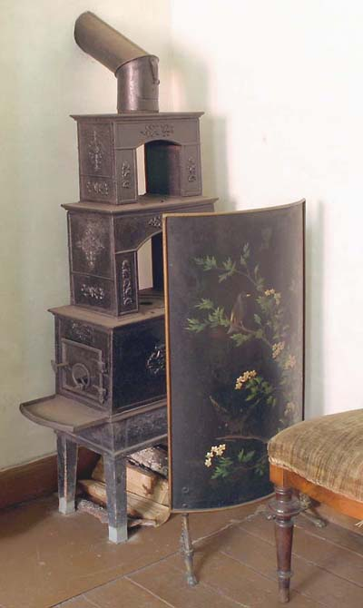
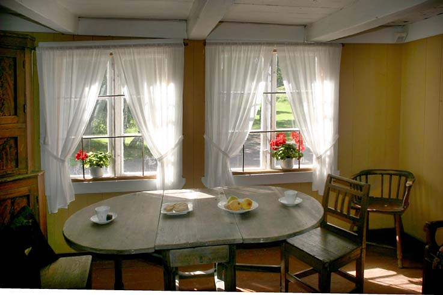
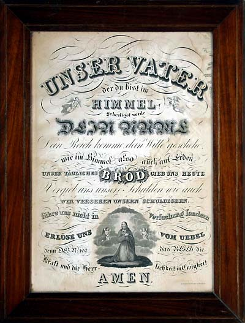
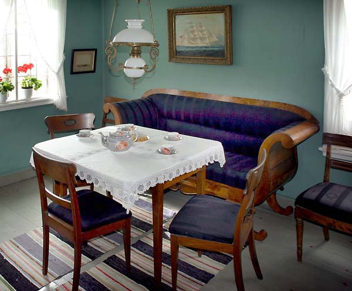

Vest-Agder Fylkesmuseum - Bo i Bygaden
Foto: Torvald Slettebø, Universitetet i Agder, Seniorsenteret (2005)
Konsulent: Kirsten Bertheau Nøklebye.
Henrik Wergwelandsgate 29. Et hjørnehus i sweitserstil, bygget på slutten av 1700-tallet, men ombygd flere ganger. Opprinnelig plassering kvartal 9. Flyttet til museet i perioden 1991 til 1994.
Tordenskjoldsgate 20, en bjelkehuggers bolig, bygget i 1787. Opprinnelig plassering kvartal 1. Flyttet til museet 1959.
Festninggsgaten 48, håndtverksboligen, bygget 1813.
Kristians fjerdes gate 108. En gammeldags krambod, bygget i 1860, etter en liten bybrann i 1859.
Skippergaten 111. Omkring 1900 bodde det her personer. Bygget på 1700-tallet.
Oversiktbilde over Bygaden. Bygningene kommer fra gater i Kvadraturen, som skulle moderniseres og få nybygg. I stedet for å rive dem, ble de flyttet til museet. Bygdens intensjon er å gjenskape en tro kopi av en rett Kristiansandsgade med vånigshus og bakgårder.
Mørch-huset, Vestre Strandgate 44. Flyttet til museet i 1965. Representerer Kristiansands patrisier-byggestil.
Festningsgaten 16, opprinnelig to hus, med felles inngang. Bygget på begynnelsen av 1700-tallet, flyttet til museet 1957.
Konsul Mørchs have-paviljong, som nå tjener som kafe i bygaden. Rikfolk som hadde slike paviljonger, måtte gå over gaten for å komme dit. Men de to Strandgatene hadde jo den gang lite trafikk.
Museets parkområde med lekeapparater og hyggelige sittegrupper.
Bakgården vi ser her, var tilknyttet Kristian fjerdes gate 108. Alle husene i Kvadraturen hadde en kjøkkenutgang, hvor de kom ut i bakgården. Der var det vannpost, utedo, bryggerhus. Det kunne være en liten gressplen og noen prydbusker. Man hadde et lite rekreasjonssted.
Til høyre har vi tobakksspinneriet, rett fram er det blikkenslagerverksted i annen etasje, med lagerrom i første etasje. Til venstre uthus med vedskjul og bryggerhus.
I bygningen til venstre er det utedo i første etasje, og trapp opp til et galleri. Konene kunne henge opp klesvasken. Midt i bildet museets lille hønsegård. Bakerst tobakksspinnereit.
I bakgårdene hørte også en vsannpost. Noen hadde en vannhane, hvor man kunne tappe vann direkte fra tak. Andre hadde brønn, med brønnhus over, som på dette bildet.
I stuen til venstre bodde losen. Vi ser litt av hans utstyr. Til høyre ser vi inn i ett av sovekamrene.
Nærbilde fra losens stue.
Kvinnene både på landet og i byen skulle kunne sy, brodere, strikke og veve. Både til hverdagsnytte og til pryd. Denne rokken var trolig til å spinne lintråd.
Gyngestolen var typisk hvilestol i de tusen hjem, her tidlig på 1800-tallet. Etasjeovn fra norsk jernverk.
Flere norske etrasjeovner.
Flette vedkorg, og sopelime.

Interiøret er fra Festningdsgaten 48. Kona sitter på en sto ved vinduet og broderer. Her er det lyst, og hun kan samtidig titte ut på gaten for å følge med.
Klaffebord, sannsynligvis fra 1700-tallert, eller tidlig 1800.
Fra sjømannens hjem, blant annet seilmakerutstyr. Bilderammen på bordet er laget av skråtobakkspinner, som frivaktsbeskjeftigelse om bord.

Mer sjømannsutstyr : Sjømannssekk, og skipskiste med leddikk: Det lille rommet øverst i kista. 1870 leser vi på kistelokket.
Fra Tordenskjoldsgate. Et enkelt hjem.
Fra samme hjemmet, med uttrekks-seng. Minstebarnet i kommodeskuff. Med stor familie og gjerne leieboere, bodde man trangt i de dager.

Klestørk over ovnen, i det samme enkle hjemmet. Utover bibel og postill, fantes det sjelden bøker.

Foreldrenes soveværelse: Nattsjorte, nattkjole, og pyntehåndkle. Toalettkommode med vaskestell.
Festningsgaten 16: Gang og trepp opp til annen etasje.
Bolighusene ble gjerne bygd eller påbygd til to etasjer. Tomtene var små.
Soverommene var ofte i loftsetasjen, men der var også komplette leiligheter på loftet.
Soverom med vaskestell. Vann måtte hentes i gården.
Loftsrom i Tordenskjoldssgate. Soveplass for familiens egne medlemmer, eller for utleie til losjerende.
Soverom med relativt fornemme møbler fra andre halvdel av 1800-tallet
Soverom, og elegant toalettspeil.
Vaskefat og potte i samme fajanse-stil. Tradisjonelt hadde folk med seg hjem slikt utstyr fra utlandet, men så kom de norske fajansefabrikkene, på Sørlandet særlig Egersund Fajansefabrikk. Det nye utstyret medførte nye spisevaner, og generelt bedre toaletthygiene.
Himmelsengene kom etter påvirkning fra Holland.

Vakkert håndheklet sengeteppe i tradisjonelt mønster.
Hygienen gjør fremskritt.
Kjøkken fra Kristian fjerdes gate 108, andre halvpart av 1800-tallet. Munkepanne på veggen, og på benken hakkekniv for kjøtt.
Grue for matlagning i en litt større husholdning. Til høyre vaskebrett og sinkbalje, begge betydelige tekniske framskritt.
En enkel grue i et fattigslig hjem, Tordenskjoldsgate 20.
Interiør fra kjøkken, kaffebrenner til høyre.
Fra en bedrestilt familie, Nærmest en stor morter til laging av fiskemat. Mot veggen stor spekefjel, for stor husholdning. På veggen kobberformer til puddinger. I grua gryter, kaffekjele, to vaffeljern.

Sukkersaks, som klippet kandisukker i småbiter.
Krukkesett til gryn. mel, salt, osv. Tilgang på nye varer fra utlandet gjorde at man fikk bruk for nye oppbevaringsmuligheter.
Kineserimønster på importert porselen og fajanse ble snart kopiert av de norske fabrikkene
Tallerkenhylle. Praktisk tigjengelig, men hensikten er også å vise fram velstand.
Den gamle vedkomfyren er ikke lenger i bruk.
Skapet kalles en piedestall og er i Biedermeierstil. Wienersjal på stolen.
Kniplingarbeid. Tidsfordriv for de rike.
Gammel fin duk: Småpikenes broderiøvelse.
Interiør i empirestil
Kapteinens elegante bolig, med parafinlampe og biedermeier-møbler. Sofa med hestehårstrekk.
Klaikord, en enkel forløper for spinettet. Klavikord har få strenger, i prinsippet som gitaren. Tonen anslås ved at tangenten avkorter strengen.
En empirekommode.
Fadervår på tysk. Allerede da ganske livlig forbindelse med utlandet.
Samovar til venstre, møbler i fin empire. Lin-rokk til høyre.
Stueinteriør fra slutten av 1800-tallet.
Sofagruppe i biedermeierstil.
Biedernmeiergruppe og innført porselen.
Tekanne fra ca 1875, fra utlandet, kanskje England. Skipsrederne importerte.
Stueinteriør fra 1890-årene. i Bakgrunnen etasjer med nipsfigurer. Trå-orgel til høyre, med elegant brodert krakk.
Til høyre buffet, for oppberaring og framvisning.
Interiør i smakfull historisme-stil.
Plysjstoppede møbler, 0g brodert liten hvit lysduk er brennende lys kunne plasseres.
Røkebord til venstre. Fint folk: Flosshatt for ham, og hvit hatt og parasoll for henne.
Komfortabel hvilestol, for det finere borgerskap. Håndbrodert fotskammel, med perlebroderi.

Norsk etasjeovn, og etasjer i bakgrunnen.
Måneskinnslampe for parafin.
Visstnok De tre gratier.
Røkebord med utstyr. Fra andre halvpart av 1800-tallet.
Thorvaldsens Kristus.
Pendelur på veggen. Skrue under pendelen justerte ganghastigheten. Kommode og speil i empire.
Etter hvert som fotografiet ble vanlig, fikk man ofte et familiegalleri på vegg og kommode.
Plysjduk og hvit lysduk. Praktfullt fotoalbum, for familiebildene. Den skulle det blas i, når det kom gjester.